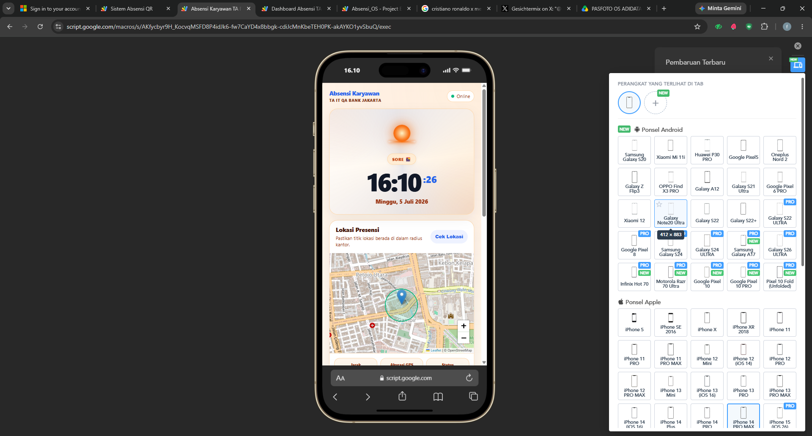
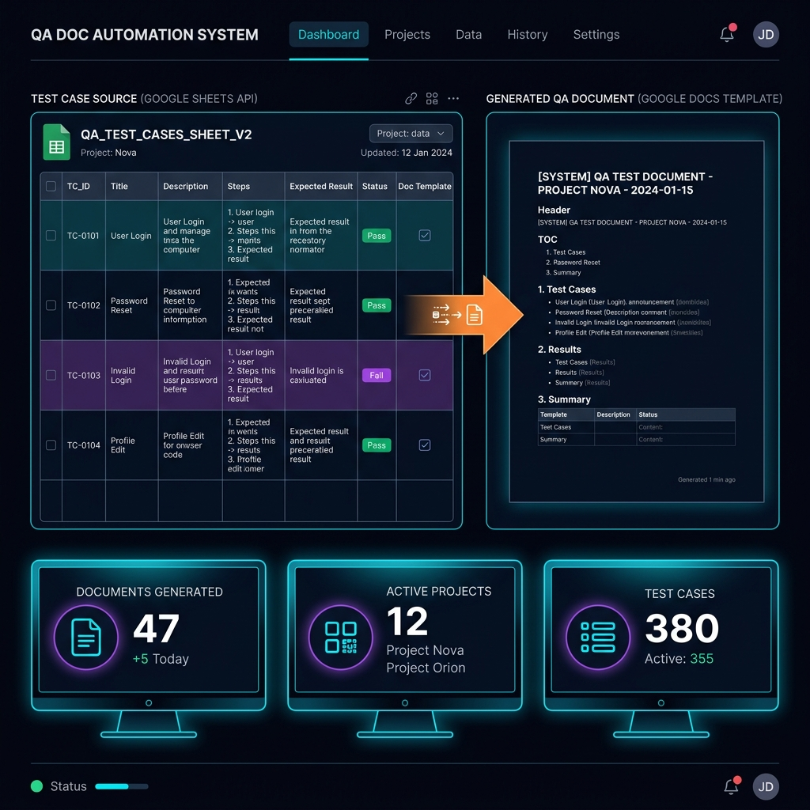
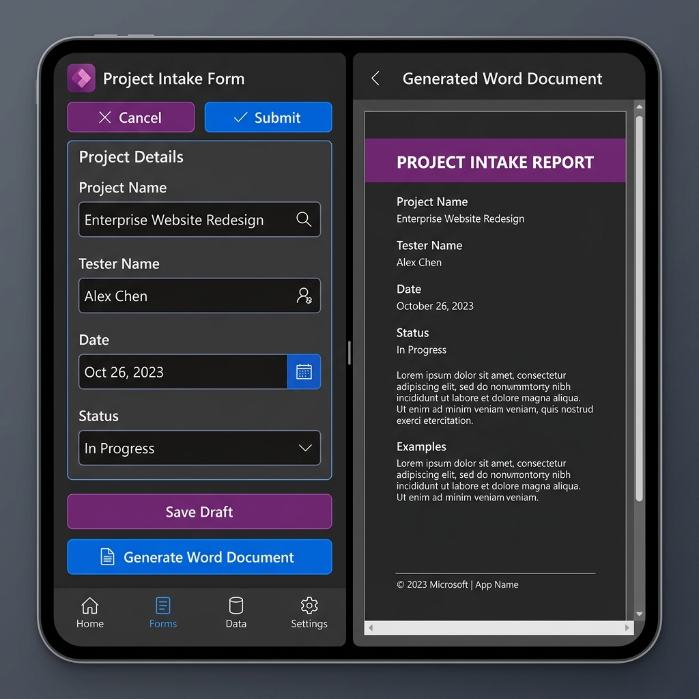
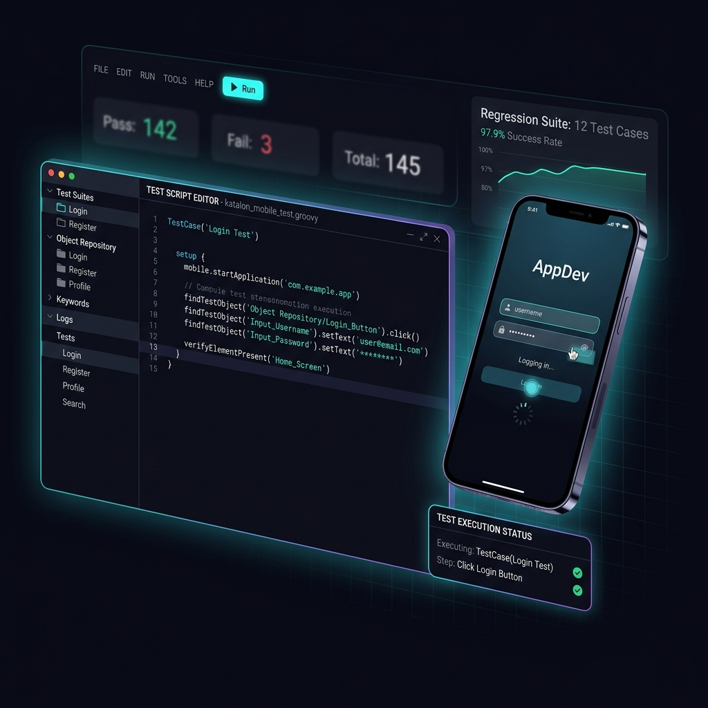

I am Farras Syam Aly, an IT QA Engineer with a strong interest in QA Automation, System Architecture, and Digital Banking Testing. My background started from software development, web applications, augmented reality, machine learning, and game development projects during university. These experiences helped me build a strong technical foundation in programming logic, problem solving, and technology exploration.
Currently, my professional focus has evolved into software quality, automation, and internal system innovation. I have experience in User Acceptance Testing, regression testing, automation regression, transaction validation, ISO 8583 log monitoring, core banking validation using AS400, and Fraud Detection System analysis.
Beyond testing execution, I am also interested in building internal automation tools that improve QA productivity, documentation accuracy, monitoring visibility, and workflow efficiency. I enjoy designing systems that connect data, documents, dashboards, and automation flows to reduce repetitive manual work and make QA processes more structured.
My current direction is to grow as a QA Automation Engineer with strong understanding of system architecture, digital banking systems, mobile automation testing, test management, and scalable QA workflows.
Farras Syam Aly
My current focus is building stronger capability in QA Automation and System Architecture by combining testing experience, automation tools, monitoring dashboards, and internal workflow innovation. I aim to create solutions that make QA activities faster, more consistent, measurable, and easier to monitor.
I believe that QA is not only about finding defects, but also about improving the way testing activities are planned, executed, documented, and monitored. My interest in automation and system architecture comes from the idea that repetitive manual work can be transformed into structured, measurable, and scalable workflows.
Bachelor degree in Computer Science
Focused on software engineering, database design, computer networks, and algorithms. Successfully built machine learning models and augmented reality projects for undergraduate thesis.
Major Science
Obtained a strong foundation in logic, mathematics, and natural science studies.
Bank Jakarta — IT Quality Assurance Division
Responsible for User Acceptance Testing, regression testing, automation regression, transaction validation, ISO 8583 log monitoring, core banking validation using AS400, and Fraud Detection System analysis. Also involved in designing internal automation tools to improve QA documentation workflows and monitoring visibility.
Freelance
Responsible for editing, formatting, and refining video content or articles. Ensuring layout alignments, audio syncing, and visual quality conform to standard client requirements.
Freelance
Provided transportation services ensuring safe navigation, timely arrivals, and excellent client communication.
Freelance
Participated in cryptocurrency testing environments, executed airdrop campaigns, and researched emerging Web3 technologies.
Freelance
Managed supply chains, coordinated customer inquiries, and optimized digital marketing platforms for sales operations.
Internal automation systems, QA frameworks, and system architecture projects.




University projects that built the technical foundation.